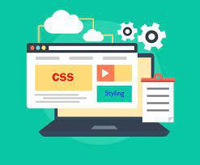

I realized this challenge that building a website is easier than I thought, and making a website professional is harder than I thought. But I'm enjoying the fact that I can build my own website. In particular, it was good that this assignment was the beginning of web design.
